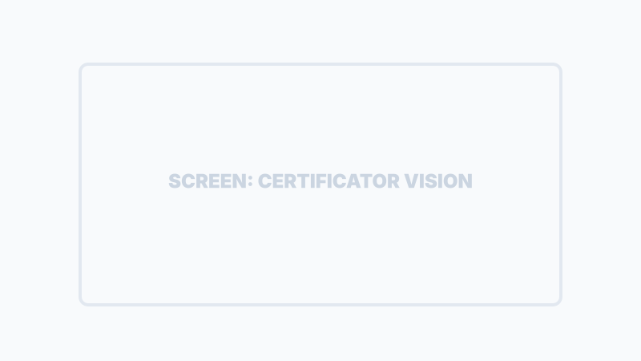
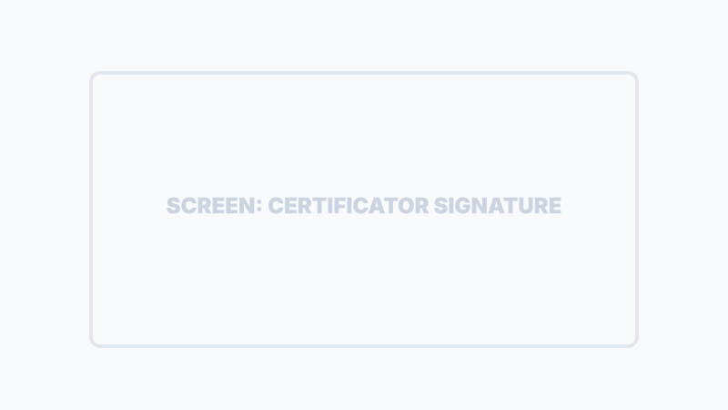

Certificatore e Qualità (Protocollo Evidence)
SiTeBoS garantisce che ogni missione sia eseguita secondo gli standard aziendali tramite il Protocollo Evidence: un sistema di validazione oggettiva dei processi.
Il "Notatario Digitale"
Durante l'esecuzione di un lavoro basato su un Blueprint (SOP), il sistema richiede all'operatore di fornire prove inconfutabili del completamento di fasi critiche. Questo elimina l'incertezza e garantisce la qualità finale.

Vision
Scatto foto o video. L'IA analizza l'immagine per validare la conformità tecnica.
Signature
Raccolta della firma digitale del cliente o del tecnico direttamente su schermo.
File
Caricamento di documenti tecnici, schede di collaudo o report PDF.
Note
Inserimento di osservazioni testuali dettagliate caricate nel log di missione.

Audit Trail & AssetLake
Tutte le evidenze raccolte non vengono solo salvate, ma vengono "sigillate" con metadati critici:
Timestamp Immutabile
Ogni prova ha una data e un'ora certa di acquisizione.
Geolocalizzazione
Coordinate GPS precise del luogo in cui è stata acquisita l'evidenza.

Audit Trail & Validazione AI
Ogni operazione, dalla firma digitale alla scansione di scontrini, viene auditata e validata dall'IA per garantire la conformità normativa (es. D.Lgs. 19/2026).
Questo storico indistruttibile, salvato nell'AssetLake aziendale, certifica la qualità del lavoro svolto e protegge legalmente l'azienda in caso di contestazioni.